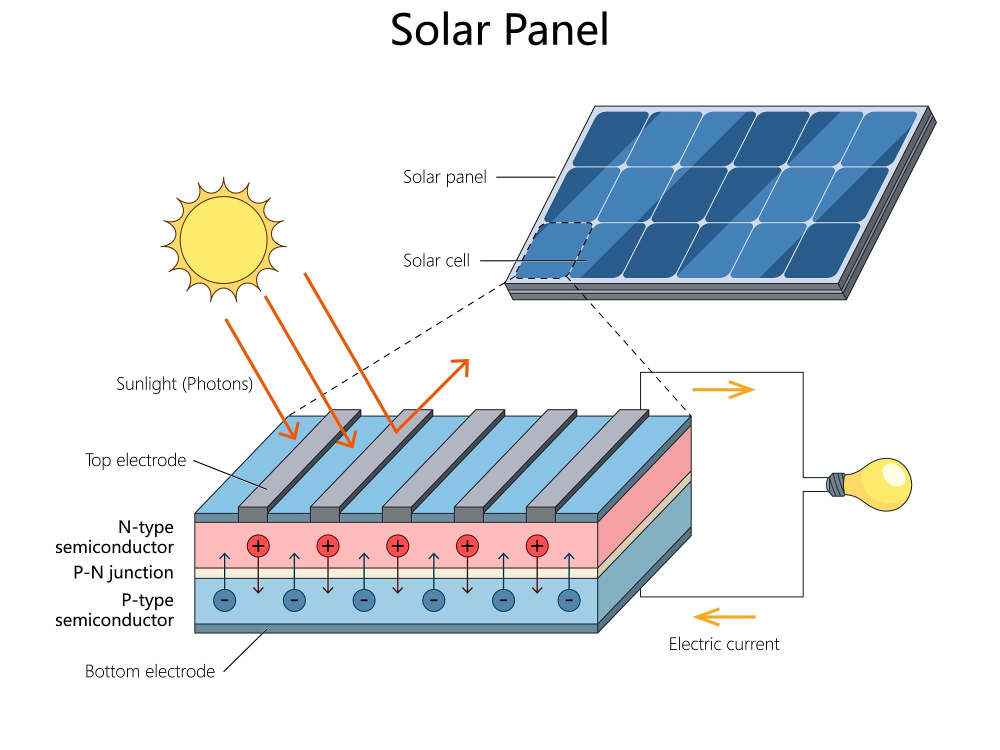
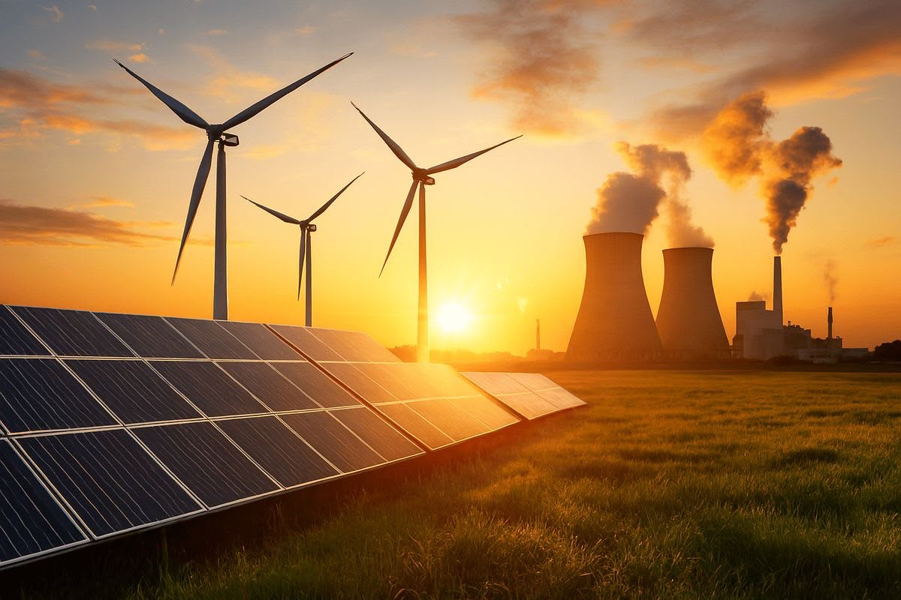
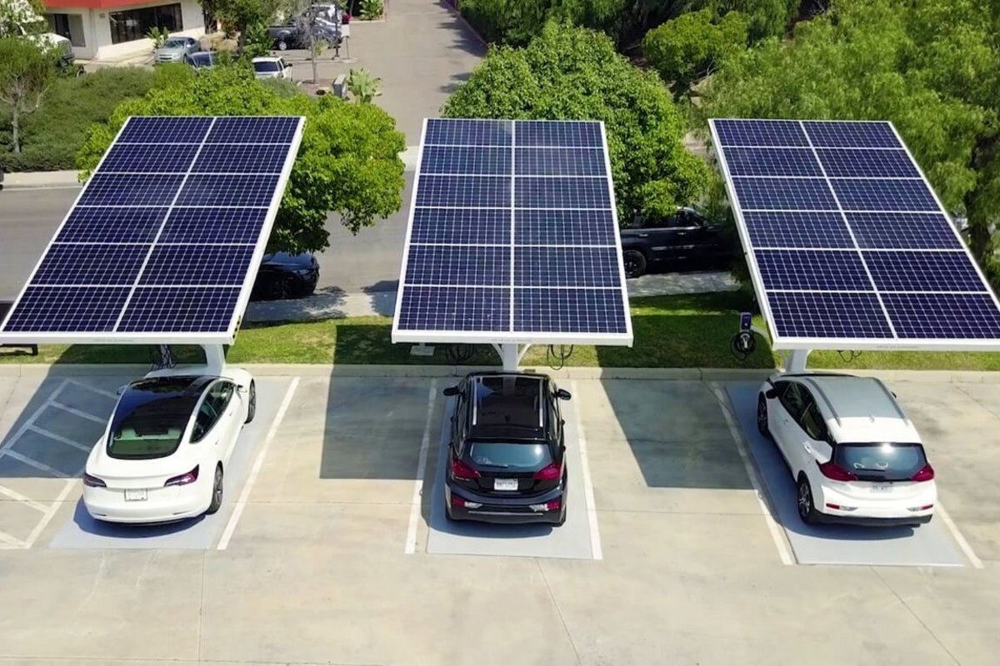

Lisa, Sophia
1. Stromerzeugung auf dem Dach (Der photoelektrische Effekt)
Eine Solaranlage besteht aus Solarzellen, die meist aus dem Material Silizium gefertigt sind, das lichtempfindlich reagiert. Wenn Sonnenstrahlen auf die Solarzelle treffen, stoßen sie darin Elektronen an. Die Solarzelle ist wie eine Batterie aufgebaut und hat eine Plus- und eine Minus-Seite, dadurch werden die angestoßenen Elektronen gezwungen, alle in dieselbe Richtung zu fließen. Diese gezielte Bewegung von Teilchen ist elektrischer Strom (Gleichstrom).
2. Die Umwandlung im Haus (Der Wechselrichter)
Der Strom vom Dach ist Gleichstrom. Unsere Haushaltsgeräte und das Stromnetz benötigen jedoch Wechselstrom, bei dem die Energie ständig die Richtung wechselt, deshalb muss der Strom vom Dach zuerst in den Wechselrichter fließen. Dieses Gerät arbeitet wie ein Übersetzer: Es wandelt den Gleichstrom in Wechselstrom um und leitet ihn in den Sicherungskasten, von wo aus er zu Fernseher, Waschmaschine und Co. fließt. Der Aufbau in 4 Schritten:
Gestell: Metallschienen werden auf dem Dach festgeschraubt
Module: Die Solarplatten werden auf den Schienen fixiert
Kabel: Die Platten werden miteinander verbunden; Kabel führen ins Haus
Anschluss: Ein Elektriker verbindet den Wechselrichter mit dem Sicherungskasten

Kein Verschleiß: Da Strom rein durch Licht und ohne bewegliche Bauteile entsteht, gibt es keine mechanische Abnutzung. Die Module halten jahrzehntelang und sind fast wartungsfrei
Flexibel einsetzbar: Das Prinzip funktioniert auf einem kleinen Taschenrechner genauso gut wie auf einem Hausdach oder in einem riesigen Solarpark
Schnelle Öko-Bilanz Die Energie, die man für die Herstellung der Anlage braucht, hat die Solaranlage in Deutschland schon nach ein bis zwei Jahren wieder selbst sauber erzeugt
Flächen-Synergien Da bereits versiegelte Flächen wie Hausdächer, Fassaden oder Parkplätze genutzt werden, ist kein zusätzlicher Raumverbrauch in der Natur notwendig.
Wirtschaftlichkeit: Durch den technologischen Fortschritt liefert Photovoltaik heute die günstigsten Stromgestehungskosten unter allen Energiearten in Deutschland.
1. Sektoren Kopplung: Strom für Wärme und Verkehr
Klimaneutralität bedeutet, dass nicht nur der klassische Stromsektor grün werden muss, sondern auch die Bereiche, die bisher fossile Brennstoffe nutzen. Solarstrom liefert die Basis für diese Sektorenkopplung:
Wärmesektor: Öl- und Gasheizungen werden flächendeckend durch elektrische Wärmepumpen ersetzt. Da Wärmepumpen hocheffizient arbeiten, reicht die Energie von PV-Anlagen (oft direkt vom eigenen Dach), um Gebäude emissionsfrei zu heizen und Warmwasser zu erzeugen.
Verkehrssektor: Der Umstieg auf die Elektromobilität vervielfacht den Strombedarf. Durch den gezielten Ausbau von Ladeinfrastruktur an Arbeitsplätzen und Wohngebäuden kann der Akku von E-Autos tagsüber direkt mit günstigem Solarstrom geladen werden.

2. Ersetzung fossiler Großkraftwerke
Um die Klimaziele zu erreichen, muss die Stromerzeugung aus Kohle und Gas drastisch sinken. Laut Daten des Umweltbundesamtes vermeidet jede erzeugte Kilowattstunde Solarstrom netto rund 690 Gramm CO_2-Äquivalente, weil sie den Einsatz von fossilen Spitzenlastkraftwerken verdrängt. Das offizielle Ausbauziel im Erneuerbare-Energien-Gesetz (EEG) sieht vor, die installierte PV-Leistung in Deutschland bis 2040 auf 400 Gigawatt (GW) anzuheben (2025 lag der Wert bei deutlich unter 100 GW). Damit soll die PV künftig rund 30 % oder mehr des gesamten Bruttostromverbrauchs decken.

3. Basis für die grüne Wasserstoffwirtschaft
Einige Bereiche der schweren Industrie (wie die Stahl- oder Chemieindustrie) sowie der Flug- und Schiffsverkehr lassen sich nicht direkt elektrifizieren. Hier wird grüner Wasserstoff als Ersatz für Erdöl und Erdgas benötigt. Die Herstellung von Wasserstoff via Elektrolyse ist extrem energieintensiv. Gigantische Solarparks (insbesondere Freiflächen- und Agri-PV-Anlagen, die Landwirtschaft und Stromerzeugung kombinieren) liefern in den Sommermonaten die dafür notwendigen Stromüberschüsse zu extrem niedrigen Erzeugungskosten.
4. Dezentralisierung und Nutzung von Riesenpotenzialen
Im Gegensatz zu Windkraftanlagen lässt sich Photovoltaik extrem dezentral und verbrauchsnah installieren. Deutschland verfügt über rund 40 Millionen Gebäude. Analysen des Fraunhofer ISE und des Bundesumweltministeriums zeigen: Das technische Potenzial allein auf deutschen Dächern und Fassaden liegt bei circa 1.000 Gigawatt. Bisher ist davon nur ein Bruchteil erschlossen. Das bedeutet, dass der enorme Flächenbedarf für die Energiewende zu einem großen Teil direkt auf bereits versiegelten Flächen im urbanen Raum realisiert werden kann, was lange Transportwege im Stromnetz einspart.